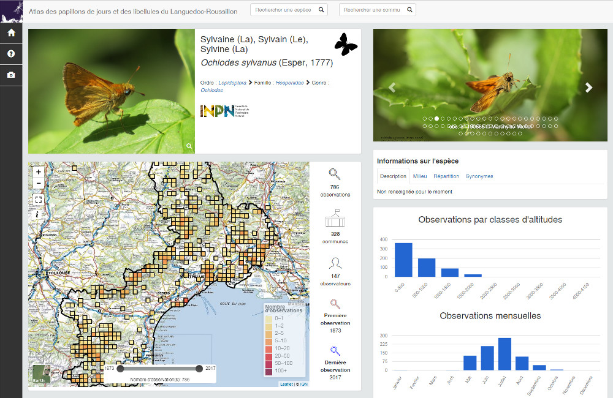
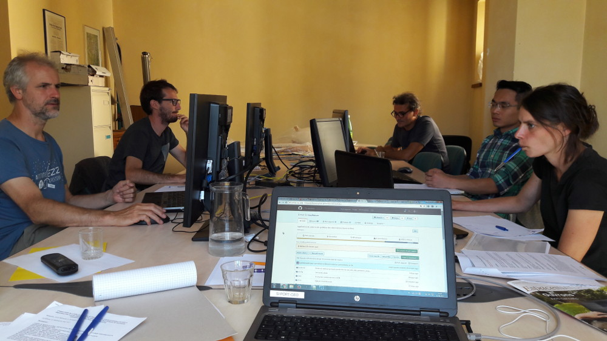
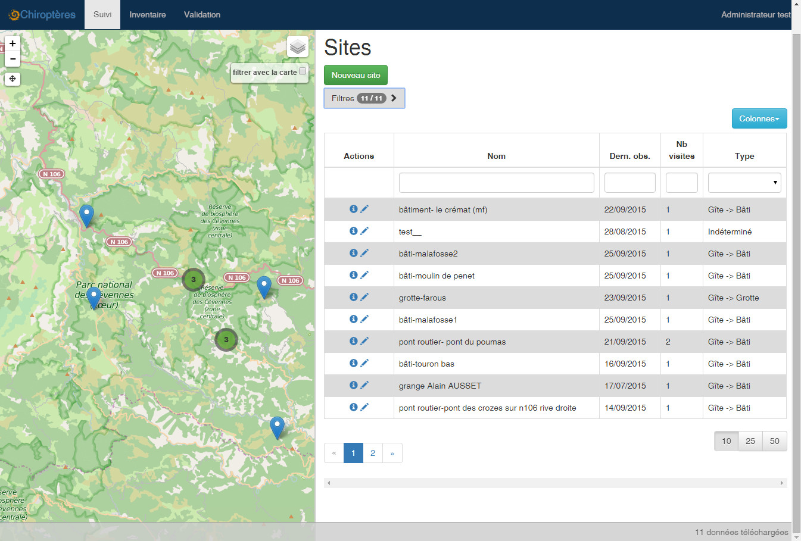
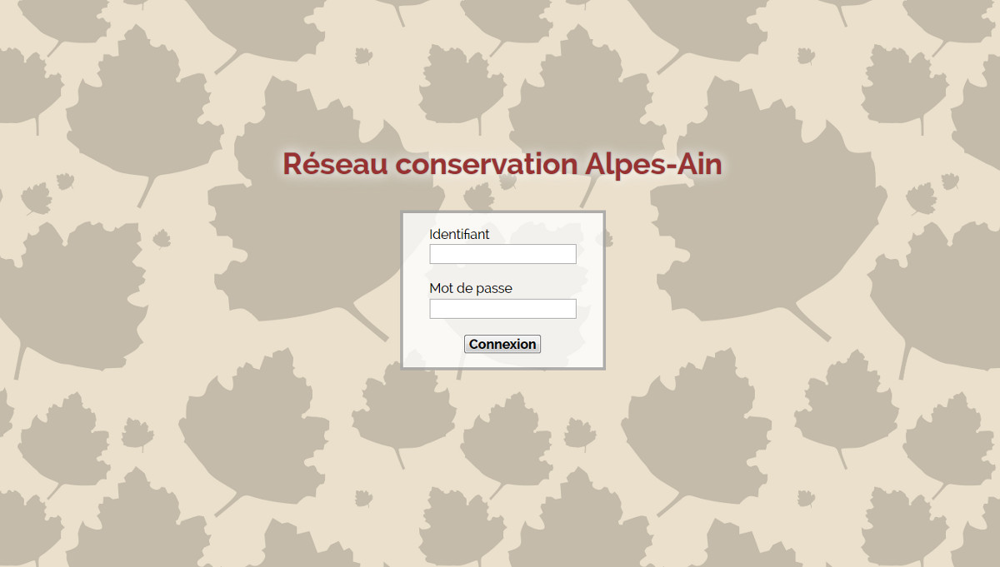
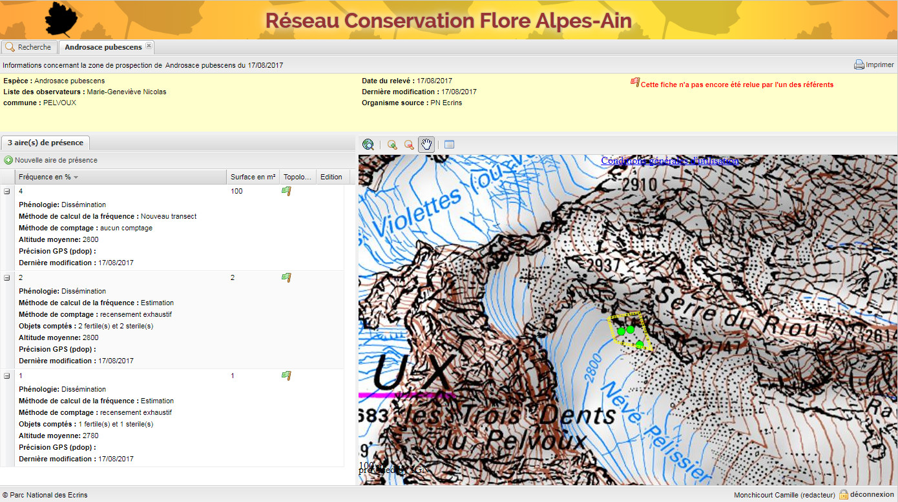
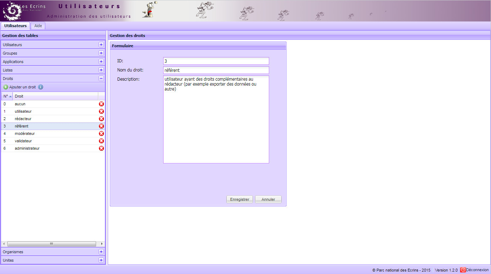
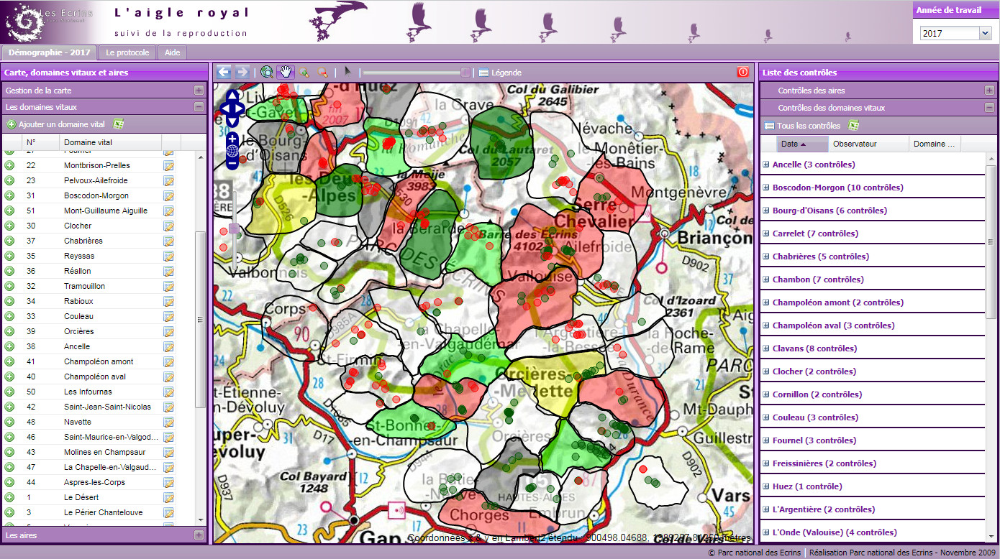
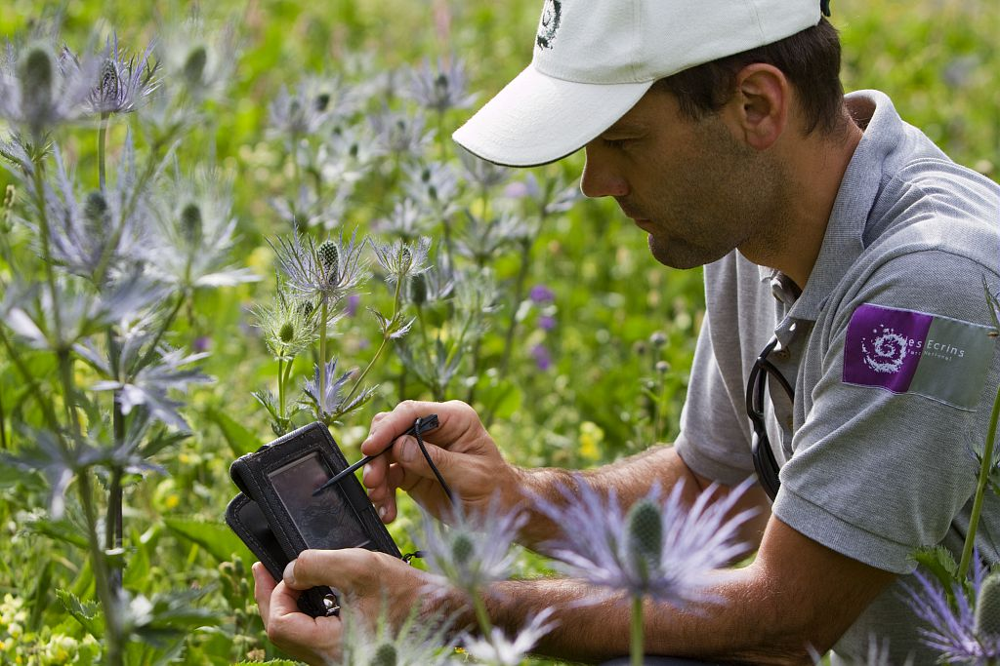
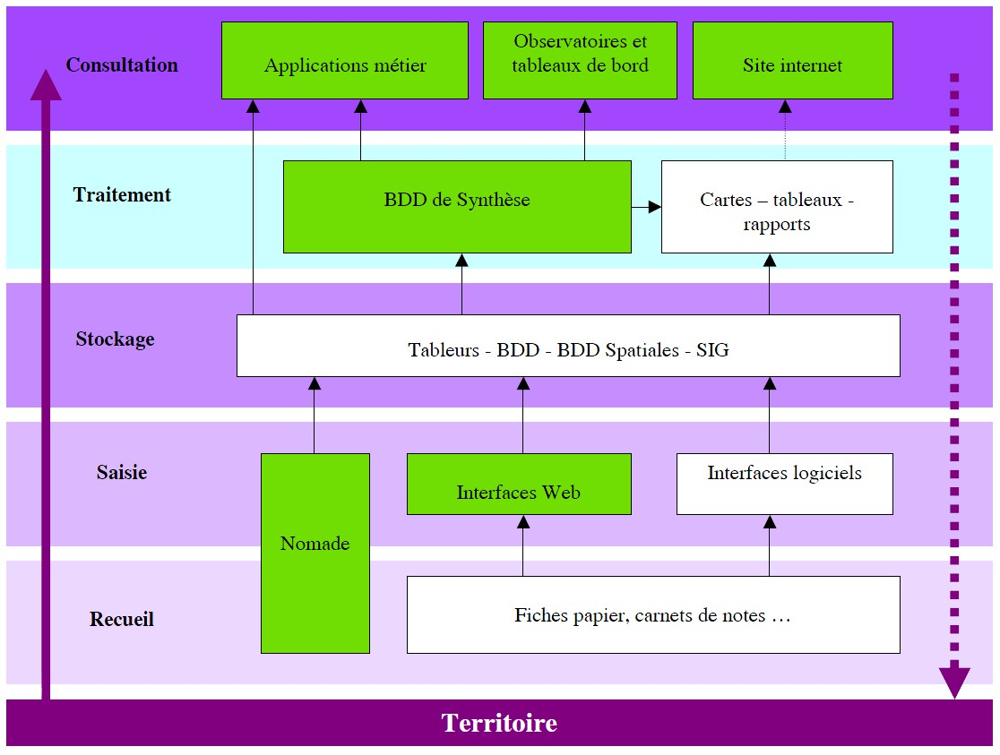
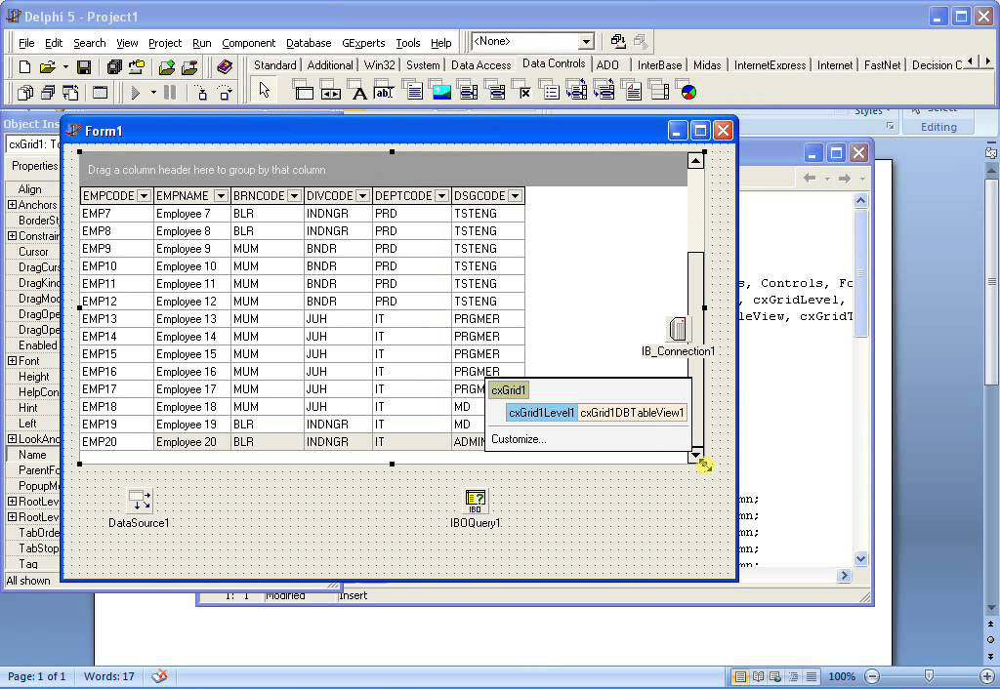

08/09/2017 - Cet atlas en ligne depuis 2012 sur Drupal, vient d'être migré dans l'outil GeoNature-atlas et est désormais en ligne : http://www.libellules-et-papillons-lr.org/atlas/.

21/08/2017 - Après un travail de refonte du MCD de GeoNature V2, une importante réflexion et des tests sur les technologies et la généricité/modularité ainsi que la mise en place des briques de développements et de l'interface ACCUEIL + SAISIE CONTACT par Quang Pham, l'équipe de développement s'est réunie pour un workshop d'une semaine.
Détail des réalisations sur Github.
Et pour tester la première démo c'est ici (premier aperçu de Accueil + Formulaire Contact FF)
C'est aussi la fin du stage de Quang Pham en Master DCISS.
Il a travaillé sur le refonte de GeoNature en stage au Parc national des Ecrins du 22 mars au 22 septembre 2017. Il a commencé par se familiariser avec l'environnement et les technologiques en créant le module Listes de TaxHub puis il a intialisé la refonte de GeoNature V2 en testant différents technologies, en mettant en place le projet de développement et en développant l'architecture et les premières interfaces de GeoNature V2.

2015 - Frédéric FIDON et Amandine SAHL du Parc national des Cévennes développent et publient un outil générique qui permet de gérer des protocoles de suivi naturaliste.
Celui-ci est compatible avec UsersHub et TaxHub et sera intégré comme un module générique dans GeoNature V2.

-
- Premiere démo GeoNature V2
- 2017 - GeoNature et données brutes biodiversité (MTES-MNHN)
- 2017 - Biodiv'Mercantour
- Nov 2016 - Inauguration Biodiv'Ecrins au MNHN - URL article + Présentation / CP
- Septembre 2016 - Projet interparc refonte GeoNature - Lien fiche projet
- 2016 - GeoNature-atlas / Biodiv'Ecrins développé par Théo Lechémia, en stage de Master au PNE. URL + rapport Théo
- 2015 : Publication de l'application de Gestion centralisée des utilisateurs sous licence libre (UsersHub)
- 2015 : BDD et application WEB de Gestion des taxons à partir du référentiel national taxref (TaxHub)
- 10/12/2014 - Première version de GeoNature publiée sur Github - https://github.com/PnX-SI/GeoNature/releases/tag/v1.0.0
- GeoNature au PNM
- GeoNature au PNV
- 2014 - Contact et Synthèse Faune dépersonnalisé pour le déployé au PAG
- 2014 : Application mobile Flore Patrimoniale sur tablettes Android
- 2013 : Application grand public de Suivi des bouquetins marqués (http://bouquetins.ecrins-parcnational.fr/)
- 2013 : Application mobile Contact Faune sur tablettes Android
- 2013 : BDD et application WEB Gestion et valorisation des Sentiers (Geotrek) >> Open source, Github, bonnes pratiques
- 2012 : BDD et application WEB Faune (Contact vertébrés, invertébrés, mortalité, Synthèse Faune)
- 2012 - Stratégie scientifique du PNE avec de nombreux éléments relatifs au SI - 2.2.7- Développement des usages de l'information scientifique
- http://www.ecrins-parcnational.fr/fichedoc/strategie-scientifique-parc-national-ecrins
- 2012 - Flore prioritaire élargit au réseau Alpes-Ain, piloté par le CBNA
-
-
-

2011 - L'organisation qui structurera GeoNature prend forme avec le développement d'un deuxième protocole flore (Flore station) et la première application de Synthèse des données inter-protocoles

2010 - Déjà disponible en mobile sur PDA, la version de l'application WEB Flore Patrimoniale est développée par Gil Deluermoz.
2010 - Alors que les projets de développements d'applications web se multiplient, Gil Deluermoz conçoit et développe une base de données et une application web permettant de centraliser la gestion des utilisateurs, de leurs comptes, et de leurs droits dans les différentes applications.
Cette application deviendra plus tard UsersHub.

2009 - Gil Deluermoz développe la première application web réalisée en interne au Parc national des Ecrins pour le protocole de suivi de la reproduction de l'aigle royal.
Ces développements sont réalisées avec des technologies open source (PostgreSQL/PostGIS, PHP, Symfony, ExtJS).

2008 - Le protocole de suivi Flore prioritaire est déployé sur des terminaux Windows mobile pour améliorer la chaine de travail et la qualité des données.

2007 - Gil Deluermoz et Julien Guilloux travaillent sur les principes et les concepts d'organisation et de chaine de travail qui deviendront plus tard GeoNature.
Pour en savoir plus, lire la présentation du SI du PnEcrins.

2002 - Les parcs nationaux des Ecrins et de la Vanoise conçoivent et développement ensemble leur première base de données SQL pour saisir et gérer les données Contact Faune et Flore.
Julien Guilloux la développe avec Firebird. L'interface de saisie et de consultation est réalisée avec Delphi et MapX.
Conseil Scientifique du 11 octobre 2002 :
"Descriptif contexte :
L’observation de la faune sauvage constitue l’un des piliers des travaux scientifiques du Parc national des Écrins. Depuis 1973, plusieurs protocoles d’inventaire ont produit des données hétérogènes. Afin d’améliorer l’administration des bases de données, le service scientifique a entrepris une restructuration de ses protocoles faune à la faveur d’un développement de nouveaux outils informatiques.
Actions réalisées, historique :
- 2001 : Modélisation des différents protocoles faune incluant les problématiques posées, le stockage des relevés de terrain et le traitement informatique des données. Méthodologie utilisée : Merise.
- 2002 : Prise en main des trois nouveaux logiciels : Base de données de type SQL interbase, programmation Delphi, composant MapX (intégration des cartes dans les programmes).
Nouvelle fiche d’observation de la faune des vertébrés distribuée aux agents du Parc."

Contactez l'équipe du pôle Système d'Informations du Parc national des Ecrins
04-92-40-20-30